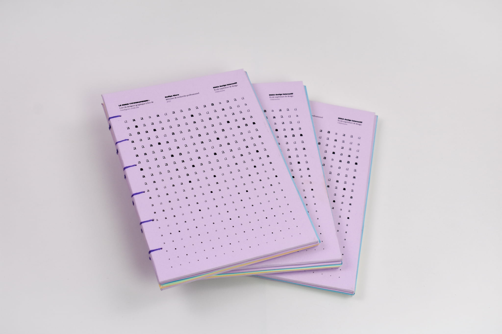
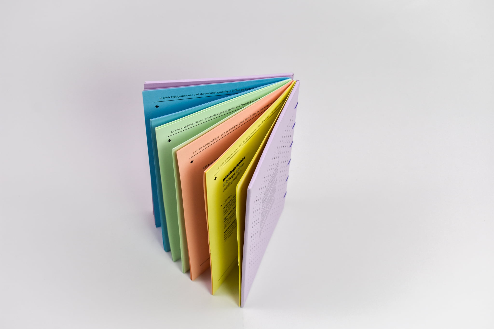
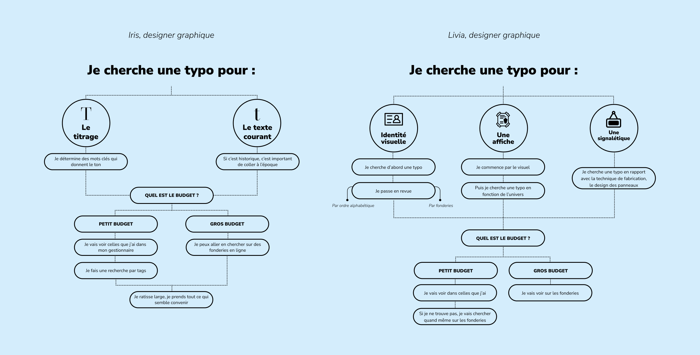
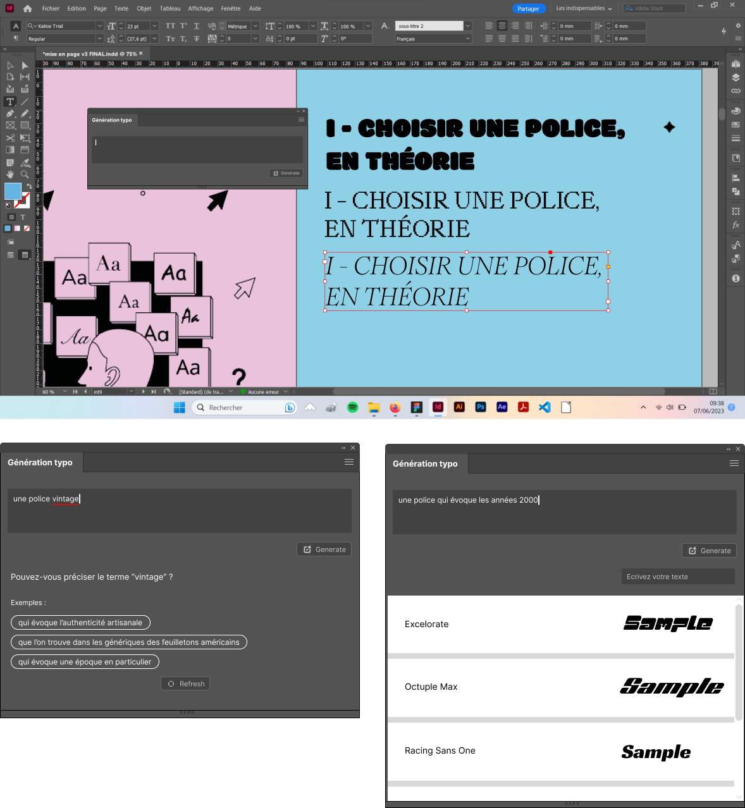
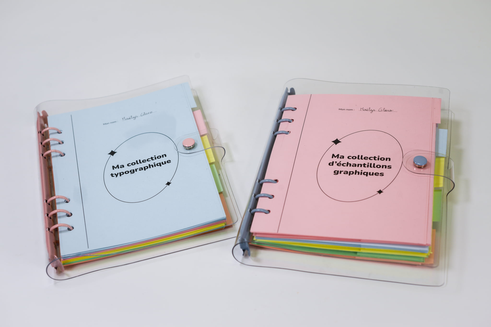
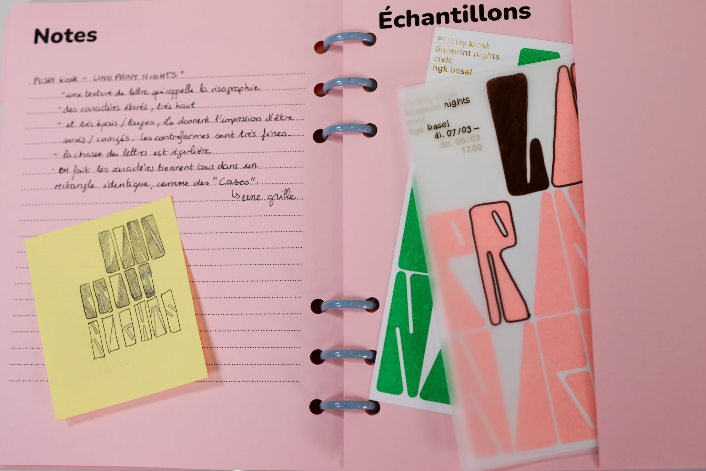
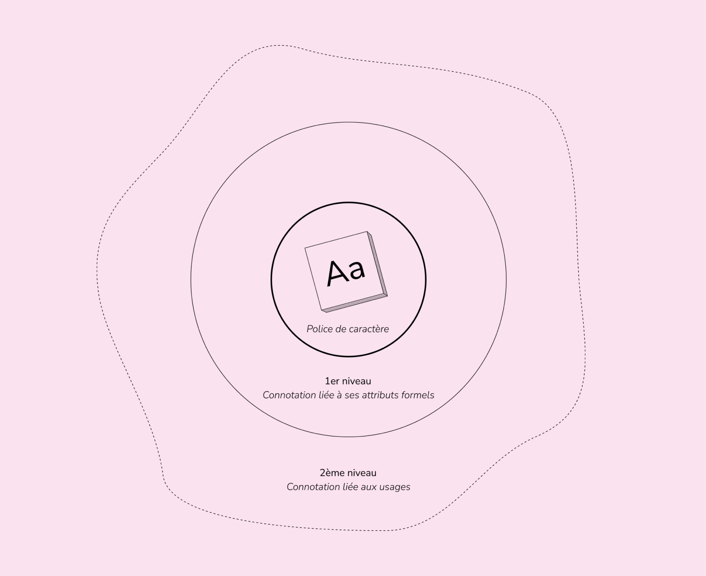
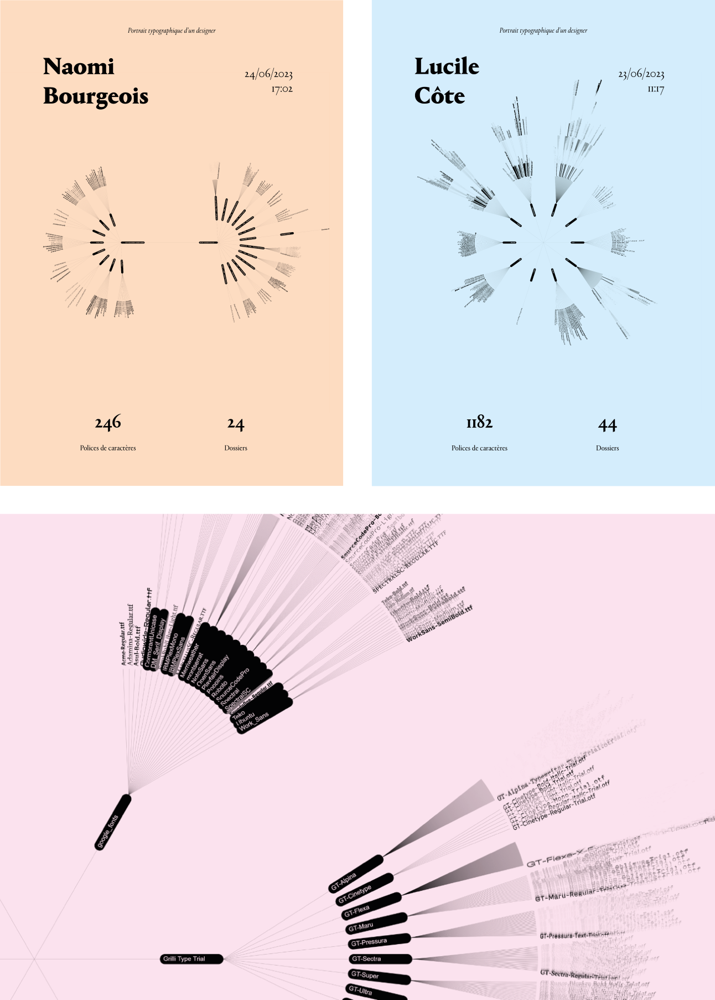
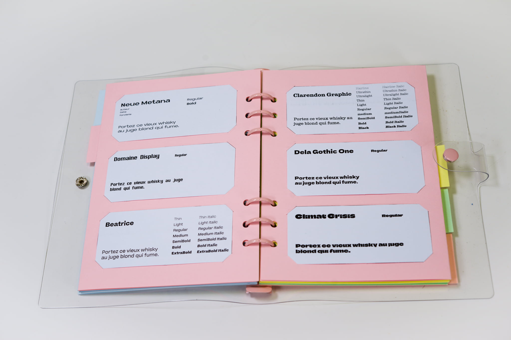
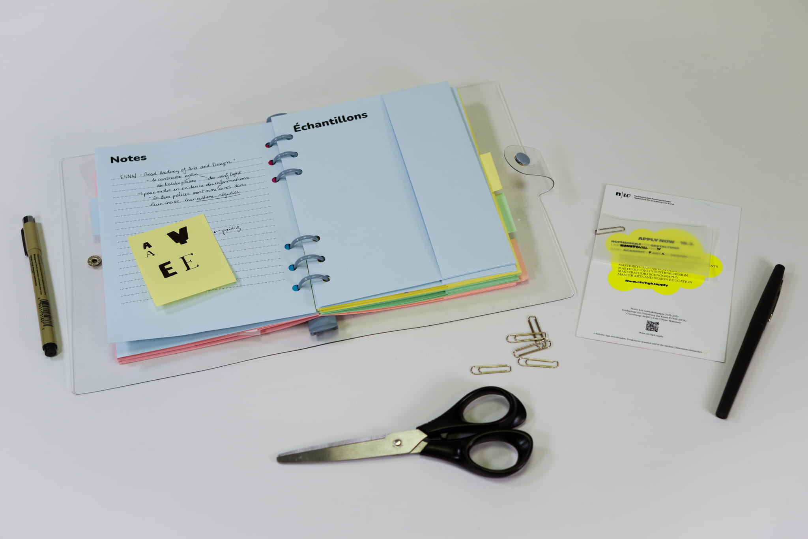

Diplôme DSAA
#Typographie #Outils #Choix
Le choix d'une police pour les designers graphiques
Projet de recherche
Mon travail de recherche s’articule autour de la notion de “choix typographique”, le moment où un designer graphique doit choisir une police de caractère pour un projet.
J’aborde ici la typographie en tant qu’outil du designer, et je vois les polices de caractères comme des ressources, que les designers graphiques aiment particulièrement collectionner. Faire une collection avec, ou stocker ces ressources induit donc qu’on a une façon de les classer. Pour pouvoir ensuite naviguer dans notre collection. Et faire un choix.
north_eastClique ici pour en savoir plus sur mes expérimentations









